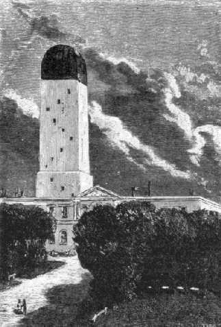

DE LA TERRA A LA LLUNA
CAPÍTOL IV
RESPOSTA DE L'OBSERVATORI DE CAMBRIDGE
Tanmateix, Barbicane no perdé
un instant enmig de les ovacions de què era objecte. El seu primer esment
fou de reunir els seus confrares al despatx del Gun-Club. Allí, després
d'un canvi d'impressions, hom convingué consultar els astrònoms
sobre la part astronòmica de l'empresa. Un cop fos coneguda la resposta,
es discutirien els mitjans mecànics i res no seria omès per tal
d'assegurar l'èxit d'aquest gran experiment.
Una nota molt precisa, contenint preguntes especials, fou redactada i adreçada
a l'observatori de Cambridge, de Massachusetts. Aquesta ciutat, on fou fundada
la primera Universitat dels Estats Units, és justament famosa pel seu
observatori astronòmic. Allí es troben reunits savis del més
gran prestigi; allí funciona el potent telescopi que permeté a
Bond de resoldre la nebulosa d'Andròmeda i a Clarke de descobrir el satèl·lit
de Sírius. Aquella cèlebre institució justificava plenament
la confiança del Gun-Club.
Dos dies després, la resposta tan impacientment esperada arribava a mans
del president Barbicane. Estava concebuda en aquests termes:

L'Observatori de Cambridge
El director de l'Observatori de Cambridge al president del Gun-Club, de Baltimore
"Cambridge, 7 d'octubre.
A la recepció
de la seva honorable comunicació del 6 del corrent, adreçada a
l'Observatori de Cambridge en nom dels membres del Gun-Club, de Baltimore, la
nostra junta directiva s'ha reunit immediatament i ha considerat convenient
de respondre com segueix:
Les preguntes que li han estat formulades són:
1.ª És possible d'enviar un projectil a la Lluna?
2.ª ¿Quina és la distància exacta que separa la Terra
del seu satèl·lit?
3.ª ¿Quina serà la duració del trajecte del projectil,
al qual s'haurà de donar una velocitat inicial suficient, i en conseqüència
en quin moment haurà d'ésser engegat perquè trobi la Lluna
en un punt determinat?
4.ª ¿En quin moment precís es trobarà la Lluna en
la posició més favorable per a ésser aconseguida pel projectil?
5.ª ¿En quin punt del cel haurà de visar-se el canó
destinat a llançar el projectil?
6.ª ¿En quin lloc del cel es trobarà la Lluna al moment de
partir el projectil?
Resposta a la primera pregunta:
Sí, és possible d'enviar un projectil a la Lluna, si s'aconsegueix
de dotar aquest projectil d'una velocitat inicial de dotze mil iardes per segon1.
El càlcul demostra que aquesta velocitat és suficient. A mesura
que s'allunya de la Terra l'acció de la pesantor disminueix en raó
inversa del quadrat de les distàncies, és a dir, que per una distància
tres vegades més gran aquesta acció és nou vegades menys
forta. Per consegüent, la pesantor de la bala decreix ràpidament
i acabarà per anul·lar-se del tot en el moment d'equilibrar-se
l'atracció de la Lluna amb la de la Terra, o sia als quaranta-set cinquanta-dosens
del trajecte. En aquell moment, el projectil no pesarà més, i
si salva aquell punt caurà damunt la Lluna pel sol efecte de l'atracció
lunar. La possibilitat teòrica de l'experiment està, doncs, absolutament
demostrada, i depèn només del seu èxit la potència
de l'aparell que sigui emprat.
Segona resposta:
La Lluna no descriu al voltant de la Terra una circumferència, sinó
una el·lipse de la qual el nostre món ocupa un dels focus, i per
tant la Lluna es troba unes vegades més pròxima a la Terra i altres
més allunyada, o bé, en termes astronòmics, tan aviat en
el seu apogeu com en el seu perigeu. Ara bé, la diferència en
l'espai entre la seva distància més llarga i la més curta
és bastant considerable perquè no sigui tinguda en compte. En
efecte, en el seu apogeu, la Lluna està a 253.000 milles (407.077 quilòmetres)
i en el seu perigeu a 222.000 milles (357.200 quilòmetres), cosa que
fa una diferència de 31.000 milles (49.877 quilòmetres), o sia
més de la novena part del seu recorregut. La distància perigenca
de la Lluna ha d'ésser, doncs, la que ha de servir de base per als càlculs.
Tercera resposta:
Si la bala servés indefinidament la velocitat inicial de dotze mil iardes
per segon que li haurà estat donada al moment de la seva partença,
li caldrien nou hores de viatge per a arribar al seu destí; però,
com sigui que aquesta velocitat inicial anirà contínuament decreixent,
s'esdevé, segons els càlculs, que el projectil invertirà
tres-cents mil segons, o sia 83 hores i 20 minuts, a assolir el punt on les
atraccions terrestre i lunar s'equilibren, i en arribant en aquest punt caurà
damunt la Lluna en cinquanta mil segons, o bé en 13 hores 53 minuts i
30 segons. Cal, per tant, engegar la bala 97 hores 13 minuts i 20 segons abans
de l'arribada de la Lluna al punt visat.
Quarta resposta:
Després del que acaba d'ésser dit, convé escollir l'època
en què la Lluna serà al seu perigeu i ensems el moment en què
passarà pel zenit, cosa que escurçarà encara el recorregut
en una distància equivalent al radi terrestre, o sia de 3.919 milles
(6.305 quilòmetres), de manera que el trajecte definitiu restarà
reduït a 214.976 milles (384.000 quilòmetres). Perquè, si
bé cada mes la Lluna passa pel seu perigeu, no està sempre al
zenit en aquell moment. No s'hi presenta en aquestes condicions sinó
a llargs intervals. Caldrà, doncs, esperar la coincidència del
seu pas pel perigeu i pel zenit. Ara bé, per una sortosa coincidència,
el 4 de desembre de l'any vinent, la Lluna es presentarà en aquestes
dues condicions: a mitjanit, es trobarà al perigeu, això és,
a la seva distància més curta de la Terra, i, ensems, passarà
pel zenit.
Cinquena resposta:
Admeses les observacions anteriors, el canó haurà d'ésser
apuntat sobre el zenit2 del lloc, i de tal manera que el
dispar serà perpendicular al plànol de l'horitzó, car així
el projectil se sostraurà més ràpidament als efectes de
l'atracció terrestre. Però, perquè la Lluna pugi al zenit
d'un lloc, cal que aquest lloc no sigui més alt en latitud que la declinació
d'aquest astre, o, en altres paraules, que estigui comprès entre 0º
i 28º de latitud nord o sud3. En qualsevol altre indret,
el dispar hauria d'ésser forçosament oblic i en perjudici del
bon èxit de l'experiment.
Sisena resposta:
Al moment en què el projectil serà engegat a l'espai, la Lluna,
que recorre cada dia tretze graus deu minuts i trenta-cinc segons, s'haurà
de trobar allunyada del punt zenital quatre vegades aquesta distància,
o sia cinquanta-dos graus quaranta-vuit minuts i vint segons, espai que correspon
al camí que farà durant la trajectòria del projectil. Però
convé tenir en compte igualment la desviació que experimentarà
la bala amb el moviment de rotació de la Terra, i, com que la bala no
arribarà a la Lluna sinó després d'haver-se desviat d'una
distància igual a setze radis terrestres, els quals comptats sobre l'òrbita
de la Lluna fan a prop d'onze graus, s'han d'afegir aquests onze graus a aquells
que, com ja hem dit més amunt, provenen del retard de la Lluna, o sia
seixanta-quatre graus en xifres rodones. Per tant, al moment del dispar, el
raig visual menat a la lluna farà amb la vertical del lloc un angle de
seixanta-quatre graus.
Aquestes són les respostes de les preguntes formulades a l'observatori
de Cambridge pels membres del Gun-Club.
En resum:
1.r El canó haurà d'ésser muntat en un país situat
entre 0º i 28º de latitud nors o sud.
2.n Haurà d'ésser encarat sobre el zenit del lloc.
3.r El projectil haurà d'ésser dotat d'una velocitat inicial de
dotze mil iardes per segon.
4.t Haurà d'ésser engegat el 1.r de desembre de l'any vinent,
a les onze hores menys tretze minuts i vint segons.
5.è Trobarà la Lluna quatre dies després de la seva sortida,
el 4 de desembre, al punt de mitjanit, i en el moment de passar pel zenit.
Els membres del Gun-Club han de començar, doncs, sense tardança
els treballs necessaris per a realitzar una semblant temptativa i estar a punt
d'obrar al moment determinar, ja que, si deixaven passar el dia 4 de desembre,
no tornarà a presentar-se la Lluna en les mateixes condicions de perigeu
i de zenit de divuit anys i onze dies després.
La junta de l'Observatori de Cambridge es posa enterament a la seva disposició
per a les qüestions d'astronomia teòrica i es complau a incloure
per la present les seves felicitacions a les de tota Amèrica.
J.-M. BELFAST,
Director de l'Observatori de Cambridge."
1.
Exactament, 10.968 metres. Velocitat inicial lleugerament inferior a la que
duien alguns dels següents coets, portadors de satèl·lits
artificials:
El satèl·lit "Pioneer I", engegat l'11 d'octubre del
1958 i que fou el primer intent americà d'arribar a la Lluna, partí
a una velocitat quelcom superior als 10 quilòmetres per segon. Com sap
tothom, després d'assolir aquest artefacte 114.080 quilòmetres
d'altura, degut a una desviació soferta en ruta va retornar a la Terra
i es desintegrà en travessar l'atmosfera.
Poc temps més tars, el "Pioneer III", engegat amb el mateix
propòsit que l'anterior, partia a una velocitat de 10.450 metres per
segon. Va assolir uns 104.000 quilòmetres i, també com el primer,
es va desintegrar en retornar a la Terra.
El "Lunik I", satèl·lit artificial rus que més
endavant rebé el nom de "Mechta", disparat el dia 2 de gener
del 1959 amb l'intent de produir un impacte a la Lluna, duia una velocitat inicial
d' 11.200 metres. No va arribar a la Lluna, però hi va passar a uns 8.000
quilòmetres i entrà a formar part del sistema solar, com un planeta
artificial.
En canvi, el "Pioneer IV", disparat el dia 3 de març del 1959,
anava a una velocitat d'11 quilòmetres per segon. Aquest aparell, després
d'ultrapassar la distància de la Lluna, als 350.000 quilòmetres
va enviar informació al nostre globus i, com aquell altres satèl·lit
rus, gira també a l'entorn del Sol.
Finalment, el "Lunik II", coet còsmic rus que el dia 12 de
setembre del 1959 partí de la Terra, va arribar 34 hores després
a la Lluna i, caient a la superfície del Mar de la Tranquil·litat,
partí a una velocitat inicial d'11.263 metres per segon.
Aquestes dades demostren palesament que els càlculs que ens dóna
Juli Verne són molt ajustats, en comparar-los amb les velocitats de què
estaven dotats els més remarcables dels coets engegats per l'home en
aquests darrers temps. (N. Del T.)
2. El zenit és el punt del cel situat verticalment damunt el cap de l'observador.
3. Efectivament, només hi ha les regions de la terra compreses entre l'equador i el vint-i-vuité paral·lel, en les quals la culminació de la Lluna arribi al zenit; més enllà del 28e grau, la Lluna s'acosta menys al zenit com més s'avança devers els pols.